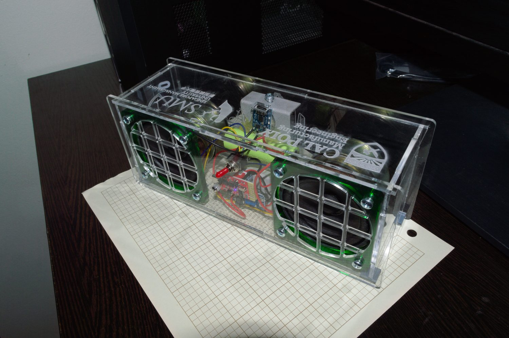

Timeline
Project Development
This project is inferred from the current Bluetooth speaker media folder, which currently contains an isometric product-style image. I set the page up as a clean project entry so future photos, CAD exports, electronics notes, enclosure iterations, and build results can be added without restructuring the site. The current story should be treated as a placeholder scaffold until the design goals, speaker hardware, manufacturing method, and final performance notes are filled in.

-
Concept
Defined Speaker Concept
Set up the project page around a Bluetooth speaker concept that can be expanded with enclosure, electronics, and build details.
- Current media provides one isometric design image.
- TBD: add design requirements, speaker driver choice, battery or amplifier details, and enclosure goals.
- TBD: add whether this is a CAD concept, printed enclosure, or finished build.
-
Design
Modeled Isometric Speaker Design
Used the available isometric image as the first visual anchor for the speaker project.
- The image appears to show the speaker form or enclosure concept.
- Future edits can add CAD screenshots, internal layout, and manufacturing steps.
- Exact software and enclosure manufacturing method are TBD.
-
Next edits
Add Build and Electronics Context
The project scaffold is ready for future build photos, wiring notes, and performance results.
- TBD: add speaker hardware and electronics integration details.
- TBD: add enclosure fabrication or assembly media.
- TBD: add final test, sound, or fit results.